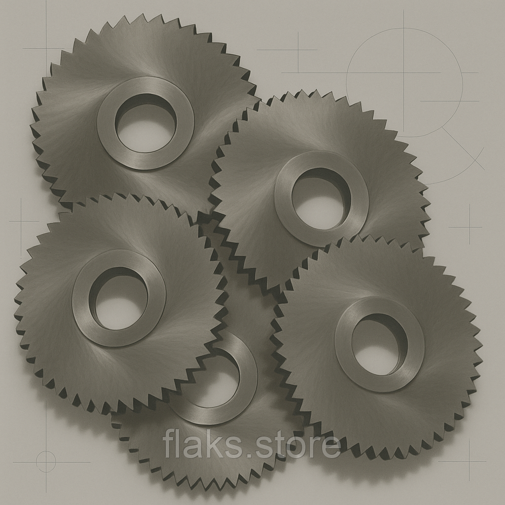

Фрези дисковіФрезы дисковые
Фреза дискова прорізна ф 63х1.0 тип 2 z48 з маточиноюФреза дисковая прорезная ф 63х1.0 тип 2 z48 со ступицей
150 UAH
без ПДВбез НДС
НаявністьНаличие: 1407 шт.
КодКод: FLK-07964
ОписОписание
Фреза дискова прорізна ф 63х1.0 тип 2 z48 з маточиною — професійний металорізальний інструмент для відрізання заготовок і прорізання пазів. Основні параметри: діаметр Ø 63 мм, розмір 63×1.0 мм та кількість зубів z48. В наявності 1407 шт. на складі у Харкові. Ціна 150 грн без ПДВ. Опт і роздріб, відправлення по всій Україні. Замовлення від 2 000 грн.Фреза дисковая прорезная ф 63х1.0 тип 2 z48 со ступицей — профессиональный металлорежущий инструмент для отрезки заготовок и прорезки пазов. Основные параметры: диаметр Ø 63 мм, размер 63×1.0 мм и число зубьев z48. В наличии 1407 шт. на складе в Харькове. Цена 150 грн без НДС. Опт и розница, отправка по всей Украине. Заказ от 2 000 грн.
ХарактеристикиХарактеристики
| Тип інструментуТип инструмента | Фреза дисковаФреза дисковая |
|---|---|
| КатегоріяКатегория | Фрези дисковіФрезы дисковые |
| Діаметр ØДиаметр Ø | 63 мм63 мм |
| РозміриРазмеры | 63×1.0 мм63×1.0 мм |
| Кількість зубів zКоличество зубьев z | 4848 |
| ТипТип | 22 |
| СтанСостояние | новийновый |
| Код товаруКод товара | FLK-07964FLK-07964 |
| НаявністьНаличие | 1407 шт.1407 шт. |